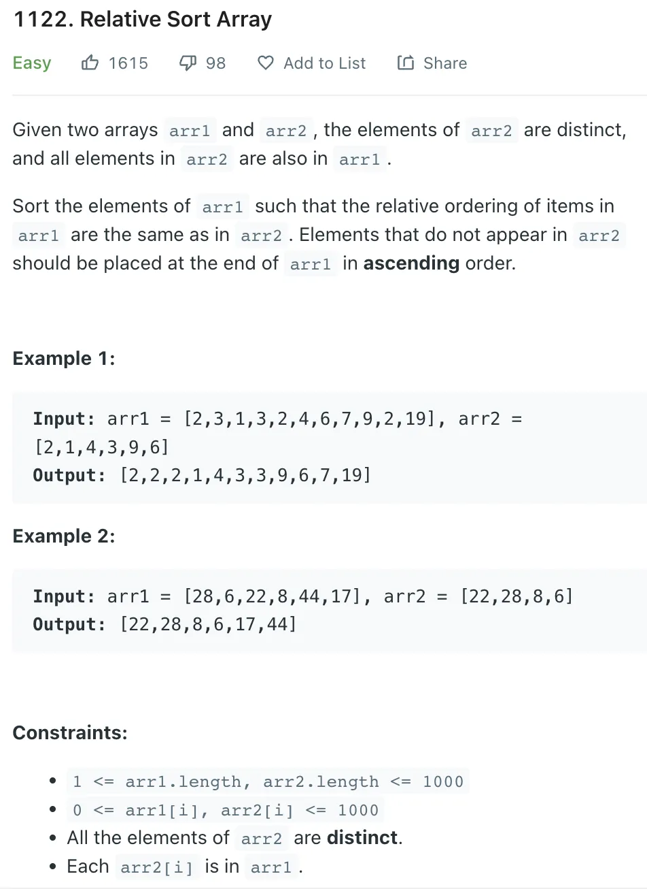

1122. Relative Sort Array
Question

✍🏽 My Solution
Runtime: 2 ms, faster than 64.93% of Java online submissions for Relative Sort Array. Memory Usage: 42.4 MB, less than 76.25% of Java online submissions for Relative Sort Array.
// 以 arr2 排序為主
// 未在 arr2 出現的 arr1 升序放在最後面
class Solution {
public int[] relativeSortArray(int[] arr1, int[] arr2) {
TreeMap<Integer, Integer> map = new TreeMap<>();
// 將 arr1 加進 map
for (int i = 0; i < arr1.length; i++) {
int count = 1;
if (map.containsKey(arr1[i])) {
count += map.get(arr1[i]);
}
map.put(arr1[i], count);
}
int k = 0;
for (int i = 0; i < arr2.length; i++) {
int count = map.get(arr2[i]); // arr1的數量
for (int j = 0; j < count; j++) {
arr1[k++] = arr2[i];
}
map.remove(arr2[i]);
}
// 將剩下的arr1排序後，加入result尾部
for(int n : map.keySet()){
for(int j = 0; j < map.get(n); j++) {
arr1[k++] = n;
}
}
return arr1;
}
}
🧠 Thought Process
- Why did I choose this particular implementation?
- 參考leetcode上題解後寫出來的
- What is the time/space complexity of my solution? How do I know?
- time: O(n logn)
- space: O(n)